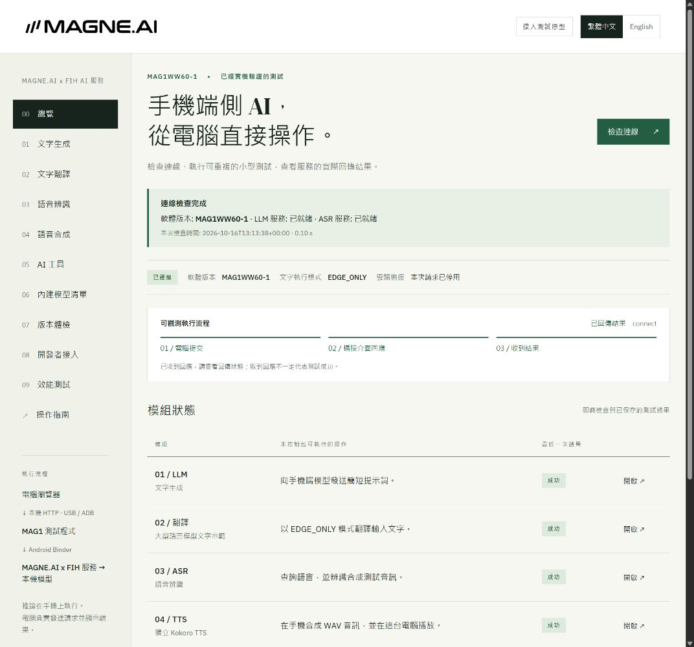
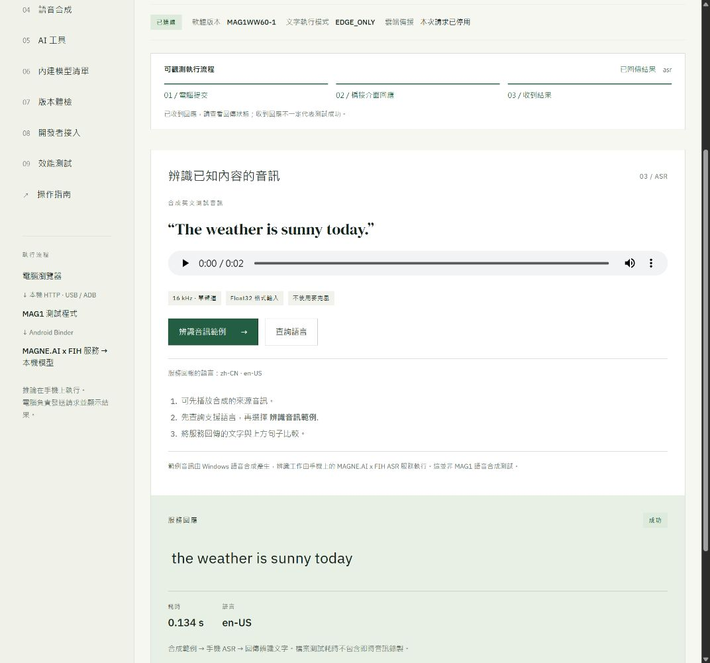
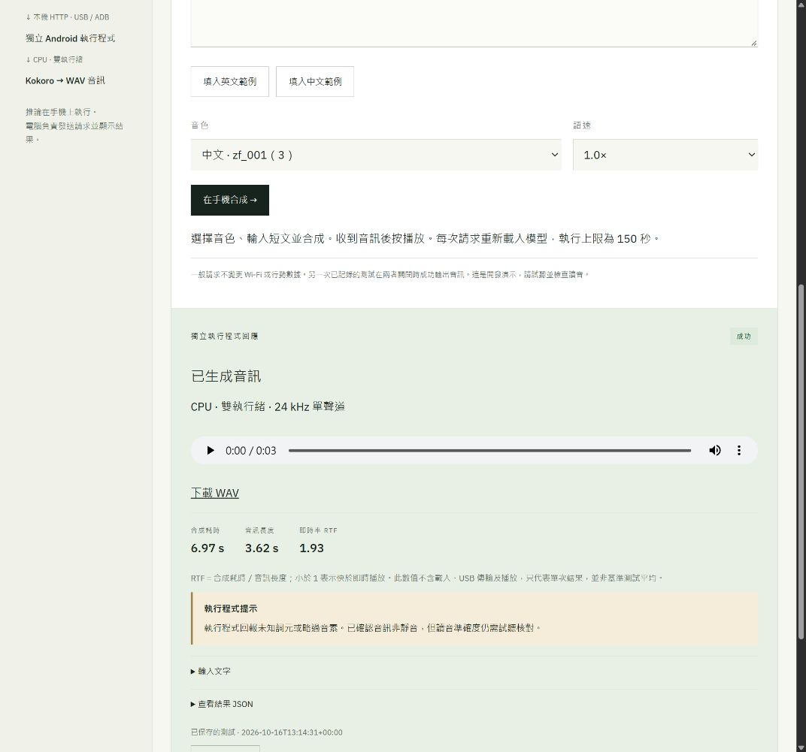
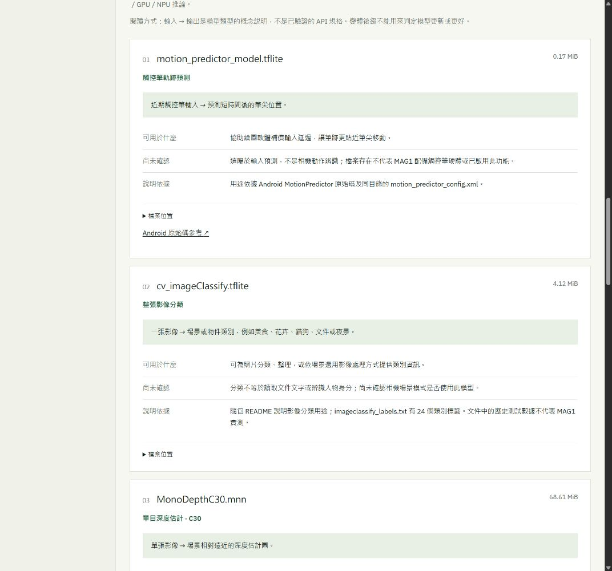

MAGNE、AI 與 Web3 / ai
端側 AI
認識 MAG1 手機上的模型、各自用途與已完成的驗證。從文字、語音到影像處理，再查看電腦控制手機端側 AI 的實際演示。
本章僅使用 MAG1WW60-1 證據。操作參考與實際錄製的動作分開說明。
已安裝 AI 應用 → 本 App 的模型與設定（待逐 App 核驗）
前置條件
- 不含個人資訊的測試問題
- 允許使用的測試帳戶、模型和網路
- 模型下載、安裝與可能的費用需依應用提示確認
操作參考 · 實測範圍見下方
- 本次發現 gptos.intelligence.assistant 2.1.570，為使用者安裝包；僅憑安裝不能認定是 MAGNE 出廠 AI。
- 分別清點每個實際使用的 AI 應用：登入、輸入、語音、圖片、模型選擇、歷史、檔案、權限和帳戶刪除等按鈕。
- 用無個人資訊的問題驗證文字輸入和結果；需帳戶時只暫停該 App。
- 如宣稱離線，需記錄模型、下載完成狀態、斷網條件、同一問題結果和恢復網路步驟；各 App 的離線能力需獨立驗證；本章已完成的控制台與通話翻譯測試見下方。
- 語音與圖片涉及麥克風/相機授權及上傳，應明確處理位置與服務條件。
- 對結果檢查事實與限制，不能把模型輸出當成官方裝置配置證據。
按鈕與選項
| 按鈕 / 選項 | 用途與邊界 |
|---|---|
| 模型選擇 | 名稱不證明模型真正執行在本機 |
| 歷史記錄 | 可能含個人內容，當前不採集 |
| 語音 / 圖片 | 權限和上傳路徑需獨立核驗 |
| 離線 | 必須有無網路測試證據 |
MAG1WW60-1 實際核對範圍
MAG1WW60-1 已整合相機專用視覺 AI 元件，以及獨立的本地通話翻譯模型路徑。相機應用與 JN1 配置包含場景識別、降噪、景深／分割及美顏元件；已整合不等於每個模式都執行全部元件。
MAG1WW60-1 通話翻譯實測中，Qwen2.5-1.5B 模型服務開啟 NPU 裝置，啟用翻譯後完成任務計數增加，支持該翻譯路徑實際使用 NPU。後續 DEMO 在 Wi-Fi 與行動數據關閉時產生新的識別與譯文，測試條件見下方紀錄；ASR／TTS 各階段的處理單元尚未確認。
相機各模式的執行追蹤仍待逐項完成。目前沒有證據表明普通拍照使用通話翻譯的大語言模型，或 CPU、GPU、NPU 同時執行同一模型。
MAGNE.AI x FIH · DESKTOP DEMO
端側 AI · 從電腦操作 MAG1
工程控制台透過本機 HTTP 與 USB／ADB，向連接的 MAG1 發送請求並顯示手機回傳結果。這是開發演示工具，不是預裝的消費者應用；相關功能持續開發中。
MAG1WW60-1 · Android 15 · 2026-10-16 · UTC+08:00 · 繁體中文介面
觀看實際操作
檢查連線 → ASR 語音辨識 → 獨立 TTS 合成 → 播放。總覽包含已保存結果，影片隨後重新提交實際請求。
影片按時間順序取樣真實瀏覽器畫面，兩次採集之間保留上一影格，並非逐影格流暢錄屏。耗時請以回傳數據為準，不以影片長度計算。播放段音軌採用此次生成的 WAV，對齊播放操作，並非現場麥克風錄音。
依序操作
- 以 USB 連接已準備好的 MAG1，完成正常裝置授權，啟動本機控制台，選擇英文或繁體中文。
- 選取「檢查連線」，確認 MAG1WW60-1 與所需服務狀態。
- 在「語音辨識」查詢語言並選取「辨識音訊範例」，將回傳文字與 The weather is sunny today. 比較。這是合成檔案測試，不是即時麥克風錄音。
- 在「語音合成」選擇範例文字、對應音色及語速，再選取「在手機合成」。成功後播放或下載 WAV，並查看提示。
- 在「內建模型清單」查看各檔案用途及依據；檔案存在不代表已執行推論或硬體加速。
兩條不同執行路徑
| 模組 | 實測路徑與範圍 |
|---|---|
| ASR | 透過 Android Binder 呼叫 MAGNE.AI x FIH 服務；英文範例已回傳辨識文字，不代表所有語言或推論硬體已驗證。 |
| Kokoro TTS | 使用手機 CPU 上的獨立 sherpa-onnx 執行程式、雙執行緒。本演示未呼叫或修復 FIH TTS 服務，其模型路徑不匹配仍存在。 |
| Gemma | 獨立模型／執行環境的測試不在本段影片內，不將其表述為 FIH SDK 已支援。 |
電腦可以操作這些已準備好的手機端測試路徑，並顯示真實回應。本次錄製維持 Wi-Fi 與行動數據開啟，不作為新的斷網驗證；下方獨立的離線通話翻譯 DEMO 另列測試條件。
可放大檢視的操作截圖




試聽此次輸出
你好，這段語音由手機本地模型產生。
音訊 3.62 秒 · 合成 6.97 秒 · RTF 1.93。合成耗時不含模型載入、USB 傳輸及播放；這是單次觀測，不是基準測試平均。執行程式回報未知詞元／略過音素提示，讀音尚未獨立評分。
本說明書內嵌的是靜態演示素材，不會將訪客連至本機控制服務。實際測試需已準備好的電腦、控制台環境及已授權的 MAG1 USB 連線。
MAG1 · ON-DEVICE AI
端側 AI 模型總覽
本節涵蓋日期掃描中已識別的全部模型格式檔案、新增廠商編譯候選檔，以及另行安裝的 Gemma 測試。不宣稱已找出手機所有模型：應用程式私有資料、其他 APK 封裝及未識別的專有格式仍在掃描範圍之外。
MAG1WW60-1 · 2026-10-16 · 數字按檔案或已識別的模型項目列示，不是獨立能力數量。檔案大小為儲存大小，不是執行時 RAM 用量。
語音概念流程為 VAD → ASR → LLM → TTS：先找出語音片段，再辨識成文字，生成回答或翻譯，最後合成聲音。這說明角色如何配合，不代表每個 MAG1 App 都使用以上全部檔案。
01 / 文字與語音
Qwen2.5-1.5B-Instruct · UNI文字生成與 LLM 翻譯
- 輸入 → 輸出
- 文字指令 → 生成文字；翻譯共用同一個語言模型。
- 用途與例子
- 可用於簡短問答、已提供文字的摘要、草擬及翻譯；生成的事實仍需核對。
- 如何使用
- 控制台：「文字生成」或「文字翻譯」，使用 EDGE_ONLY。這些入口呼叫韌體服務，沒有任意替換模型檔案的選項。
- 已記錄狀態與限制
- 已記錄文字生成及翻譯服務的真實回應；服務程式碼選用此 UNI 模型路徑。獨立通話翻譯測試的加速器觀察，不代表每次控制台請求的後端都已確認。
/product/media/models/llm/Qwen2.5-1.5B-Instruct-UNI/Qwen2.5-1.5B-a16w8-feo.unillm1,950.85 MiBParaformer · INT8自動語音辨識（ASR）
- 輸入 → 輸出
- 語音音訊 → 辨識文字；本身不負責生成語音或翻譯。
- 用途與例子
- 可為聽寫、字幕或後續翻譯提供文字；這些是使用方向，不代表所有產品整合都已驗證。
- 如何使用
- 控制台：「語音辨識」→「查詢語言」→「辨識音訊範例」。目前測試的是服務，不能在介面指定選用 Paraformer。
- 已記錄狀態與限制
- 已安裝檔案在 ASR 程式碼中被引用。英文範例已回傳文字，但尚未透過執行追蹤判定該次使用哪個 ASR 模型；服務對外回報 zh-CN 與 en-US。
/product/media/models/asr/sherpa-onnx-paraformer-zh-small-2024-03-09/model.int8.onnx78.04 MiBSenseVoice · INT8另一組語音辨識模型
- 輸入 → 輸出
- 語音音訊 → 透過另一組 ASR 配置產生文字。
- 用途與例子
- 應用程式與執行環境選用對應配置時，可作為另一條語音辨識路徑。
- 如何使用
- 目前控制台沒有獨立模型選擇器或 SenseVoice 專用測試；獨立測試需核對配置或使用專門測試程式。
- 已記錄狀態與限制
- 檔案及程式碼引用已確認，尚未獨立推論測試。資料夾的 zh-en-ja-ko-yue 不代表對外服務已開放日語、韓語或粵語，也不證明其他 SenseVoice 能力已接入。
/product/media/models/asr/sherpa-onnx-sense-voice-zh-en-ja-ko-yue-2024-07-17/model.int8.onnx228.15 MiBSilero VAD語音活動偵測
- 輸入 → 輸出
- 音訊片段 → 判斷是否有語音，協助找出說話的起點與終點。
- 用途與例子
- 避免將長時間靜音送入 ASR，並把說話分成可處理的片段。VAD 不負責辨識文字或確認說話者身分。
- 如何使用
- 屬於辨識流程內的輔助環節，不是獨立消費者 App，目前也沒有單獨控制台按鈕。
- 已記錄狀態與限制
- ASR 語音活動偵測程式碼引用此檔案；尚未測試分段準確度或獨立 VAD 推論。
/product/media/models/asr/silero-vad/silero_vad.onnx2.22 MiBKokoro · multilingual v1.1文字轉語音（TTS）
- 輸入 → 輸出
- 文字＋音色＋語速 → 語音波形；本次保存為 WAV。
- 用途與例子
- 朗讀回答、文章片段或譯文。與 ASR 互補：ASR 把聲音轉成文字，TTS 把文字轉回聲音。
- 如何使用
- 控制台：「語音合成」→ 選擇對應音色 →「在手機合成」→ 播放／下載 WAV。已示範路徑為手機 CPU 上的獨立 sherpa-onnx、雙執行緒。
- 已記錄狀態與限制
- 已記錄英文及中文 WAV 輸出。原 FIH TTS 預期 model.int8.onnx，實際安裝的是 model.onnx；獨立合成成功不代表已修復此差異。仍有詞元／音素提示，讀音尚未獨立評分。
/product/media/models/tts/kokoro-multi-lang-v1_1/model.onnx310.55 MiB02 / 系統與視覺處理檔案
這些檔案需由相符的系統或相機算法使用，目前沒有已驗證的控制台選擇器可逐一執行。下方依隨包文件、Android 原始碼或算法庫靜態引用說明用途；各模式的實際啟用狀態仍待確認。
motion_predictor_model.tflite觸控筆軌跡預測
- 輸入 → 輸出
- 近期觸控筆輸入 → 預測短時間後的筆尖位置。
- 可能用途
- 協助繪圖軟體補償輸入延遲，讓筆跡更貼近筆尖移動。
- 說明依據
- 用途依據 Android MotionPredictor 原始碼及同目錄的 motion_predictor_config.xml。
- 尚未確認
- 這屬於輸入預測，不是相機動作辨識；檔案存在不代表 MAG1 配備觸控筆硬體或已啟用此功能。
/system/etc/motion_predictor_model.tflite0.17 MiBcv_imageClassify.tflite整張影像分類
- 輸入 → 輸出
- 一張影像 → 場景或物件類別，例如美食、花卉、貓狗、文件或夜景。
- 可能用途
- 可為照片分類、整理，或依場景選用影像處理方式提供類別資訊。
- 說明依據
- 隨包 README 說明影像分類用途；imageclassify_labels.txt 有 24 個類別標籤。文件中的歷史測試數據不代表 MAG1 實測。
- 尚未確認
- 分類不等於讀取文件文字或辨識人物身分；尚未確認相機場景模式是否使用此模型。
/vendor/etc/models/noahark/imageClassify/cv_imageClassify.tflite4.12 MiBMonoDepthC30.mnn單目深度估計 · C30
- 輸入 → 輸出
- 單張影像 → 場景相對遠近的深度估計圖。
- 可能用途
- 可協助區分前後景，為依景深處理的背景模糊與散景效果提供資訊。
- 說明依據
- libsprd_aidepth_bokeh.so 對此完整模型檔名有靜態引用。
- 尚未確認
- 這是估計深度，不是校準後的距離量測，也不代表配備深度感測器；C30／C40 的選用條件及畫質差異尚未確認。
/vendor/firmware/MonoDepthC30.mnn68.61 MiBMonoDepthC40.mnn單目深度估計 · C40
- 輸入 → 輸出
- 單張影像 → 場景相對遠近的深度估計圖。
- 可能用途
- 可協助區分前後景，為依景深處理的背景模糊與散景效果提供資訊。
- 說明依據
- libsprd_aidepth_bokeh.so 對此完整模型檔名有靜態引用。
- 尚未確認
- 這是估計深度，不是校準後的距離量測，也不代表配備深度感測器；C30／C40 的選用條件及畫質差異尚未確認。
/vendor/firmware/MonoDepthC40.mnn63.21 MiBPortraitSegC10.mnn人像分割 · C10
- 輸入 → 輸出
- 一張影像 → 區分人物與背景的遮罩。
- 可能用途
- 可為保留人物清晰、模糊或替換背景，以及只調整人物區域等處理提供基礎。
- 說明依據
- libsprd_portrait_seg.so 對此完整模型檔名有靜態引用。
- 尚未確認
- 分割不會判定人物身分。四個變體的大方向相同；選用條件、支援解析度及效果差異尚未確認。
/vendor/firmware/PortraitSegC10.mnn3.71 MiBPortraitSegC20.mnn人像分割 · C20
- 輸入 → 輸出
- 一張影像 → 區分人物與背景的遮罩。
- 可能用途
- 可為保留人物清晰、模糊或替換背景，以及只調整人物區域等處理提供基礎。
- 說明依據
- libsprd_portrait_seg.so 對此完整模型檔名有靜態引用。
- 尚未確認
- 分割不會判定人物身分。四個變體的大方向相同；選用條件、支援解析度及效果差異尚未確認。
/vendor/firmware/PortraitSegC20.mnn3.71 MiBPortraitSegC50.mnn人像分割 · C50
- 輸入 → 輸出
- 一張影像 → 區分人物與背景的遮罩。
- 可能用途
- 可為保留人物清晰、模糊或替換背景，以及只調整人物區域等處理提供基礎。
- 說明依據
- libsprd_portrait_seg.so 對此完整模型檔名有靜態引用。
- 尚未確認
- 分割不會判定人物身分。四個變體的大方向相同；選用條件、支援解析度及效果差異尚未確認。
/vendor/firmware/PortraitSegC50.mnn12.89 MiBPortraitSegC60.mnn人像分割 · C60
- 輸入 → 輸出
- 一張影像 → 區分人物與背景的遮罩。
- 可能用途
- 可為保留人物清晰、模糊或替換背景，以及只調整人物區域等處理提供基礎。
- 說明依據
- libsprd_portrait_seg.so 對此完整模型檔名有靜態引用。
- 尚未確認
- 分割不會判定人物身分。四個變體的大方向相同；選用條件、支援解析度及效果差異尚未確認。
/vendor/firmware/PortraitSegC60.mnn13.81 MiBaipd.mnn對焦位置預測 · 依算法庫線索推斷
- 輸入 → 輸出
- 周邊算法涉及鏡頭馬達位置與相位偵測資訊，診斷字串包含預測對焦位置。
- 可能用途
- 推測用於協助自動對焦，預估鏡頭應移動到哪個位置，讓主體清晰。
- 說明依據
- libcamAIPD5.x.so 同時引用 aipd.mnn、vcm_predict、predict_pos、phase_diff 與 PDAF 相關字串。
- 尚未確認
- 尚未確認模型的精確輸入格式、縮寫全名、實際使用的相機模式或對焦改善幅度。
/vendor/firmware/aipd.mnn1.13 MiBgesture.mnn視覺手勢辨識
- 輸入 → 輸出
- 相機影像 → 手勢辨識結果；目前未取得完整手勢類別。
- 可能用途
- 可作為手勢互動或手勢拍照的底層辨識環節。
- 說明依據
- libgesture_mnn.so 引用此檔案、Gesture_recognition 函式及 RGB 影像輸入。
- 尚未確認
- 這與觸控螢幕導覽手勢不同；支援哪些手勢、是否已接入相機快門仍待確認。
/vendor/firmware/gesture.mnn1.88 MiBscene_seg_256_model.mnn場景區域分割
- 輸入 → 輸出
- 一張影像 → 畫面內不同語意區域的分割圖，而非只給整張照片一個分類標籤。
- 可能用途
- 可為分區影像處理提供依據，讓不同區域採用不同調整方式。
- 說明依據
- libsprd_scene_seg.so 引用此完整檔名及場景分割處理函式。
- 尚未確認
- 區域類別及相機實際整合情況尚未確認；檔名的 256 不代表照片解析度。
/vendor/firmware/scene_seg_256_model.mnn21.61 MiB03 / 廠商編譯模型與配套檔案
後續唯讀核對補列原副檔名篩選未涵蓋的 31 個二進位候選檔。有些是同一網路的分段或執行配套，不是 31 個可獨立呼叫的 AI 模型。NNA／cadence 後綴不證明 NPU／DSP 已實際執行；檔案中的感測器名稱不代表實裝相機硬體。
雙目深度模型分段3 個檔案
- 用途與證據範圍
- 檔名指向由多段組成的雙目深度估計流程，可為前後景距離區分提供資訊。part1、part3、part5 是組件，不是三個完整的使用者模型；實際相機輸入及啟用狀態尚未確認。
- 使用方式
- 需透過相符的廠商執行環境與配置使用，尚未驗證直接面向使用者或控制台的操作入口。
/vendor/firmware/BinoDepth_part1_384x576_NNA.mbs.bin6.06 MiB/vendor/firmware/BinoDepth_part3_384x576_NNA.mbs.bin1.31 MiB/vendor/firmware/BinoDepth_part5_384x576_NNA.mbs.bin14.11 MiB單目深度編譯變體4 個檔案
- 用途與證據範圍
- 與 MonoDepthC30／C40 同屬深度估計方向。算法庫有替代 NNA 路徑引用；network／cadence 檔案屬封裝配套。各變體的選用條件及等價性尚未確認。
- 使用方式
- 需透過相符的廠商執行環境與配置使用，尚未驗證直接面向使用者或控制台的操作入口。
/vendor/firmware/MonoDepthN30_NNA.mbs.bin11.58 MiB/vendor/firmware/MonoDepthN40_NNA.mbs.bin28.70 MiB/vendor/firmware/MonoDepthV40_cadence.bin1.84 MiB/vendor/firmware/MonoDepthV40_network.bin32.25 MiB人像分割編譯變體8 個檔案
- 用途與證據範圍
- 區分人物與背景，為分區處理提供資訊。這些是人像分割系列的其他封裝變體／配套，不代表多個額外人像模式已啟用。
- 使用方式
- 需透過相符的廠商執行環境與配置使用，尚未驗證直接面向使用者或控制台的操作入口。
/vendor/firmware/PortraitSegN60_NNA.mbs.bin6.89 MiB/vendor/firmware/PortraitSegN70_NNA.mbs.bin43.31 MiB/vendor/firmware/PortraitSegV30_cadence.bin4.42 MiB/vendor/firmware/PortraitSegV30_network.bin4.28 MiB/vendor/firmware/PortraitSegV60_cadence.bin4.47 MiB/vendor/firmware/PortraitSegV60_network.bin5.21 MiB/vendor/firmware/portraitseg_cadence.bin2.83 MiB/vendor/firmware/portraitseg_network.bin3.79 MiB影片降噪1 個檔案
- 用途與證據範圍
- libvideonr.so 引用此完整檔名，對應影片降噪方向。IMX586 與 1080p 標籤不能確認實裝感測器、當前錄影模式或 4K 支援。
- 使用方式
- 需透過相符的廠商執行環境與配置使用，尚未驗證直接面向使用者或控制台的操作入口。
/vendor/firmware/IMX586_id0_1080p_videonr_NNA.mbs.bin0.16 MiBRAW 多幀降噪 · 日間／夜間變體4 個檔案
- 用途與證據範圍
- 檔名及 RAW AI MFNR 算法庫模板指向利用多張 RAW 影格降噪，分日間／夜間變體。具體融合哪些影格、選用哪個變體、是否用於某張照片仍未確認；感測器標籤僅屬封裝線索。
- 使用方式
- 需透過相符的廠商執行環境與配置使用，尚未驗證直接面向使用者或控制台的操作入口。
/vendor/firmware/raw_ai_mfnr_n6pro_imx586_day_NNA.mbs.bin1.55 MiB/vendor/firmware/raw_ai_mfnr_n6pro_imx586_night_NNA.mbs.bin1.55 MiB/vendor/firmware/raw_mfnr_n6pro_sensor_48M_day_NNA.mbs.bin1.76 MiB/vendor/firmware/raw_mfnr_n6pro_sensor_48M_night_NNA.mbs.bin1.76 MiB皮膚區域分割1 個檔案
- 用途與證據範圍
- libSkinSegment.so 引用此檔案。皮膚區域遮罩可為局部皮膚處理提供資訊，不代表膚色分類、健康診斷或美顏功能已啟用。
- 使用方式
- 需透過相符的廠商執行環境與配置使用，尚未驗證直接面向使用者或控制台的操作入口。
/vendor/firmware/skinseg_NNA.mbs.bin8.24 MiB臉部分析二進位配套4 個檔案
- 用途與證據範圍
- 檔名指向影像處理中的臉部分析；是否輸出特徵點或其他屬性尚未確認。不能把這些檔案等同於身分辨識或生物辨識解鎖。
- 使用方式
- 需透過相符的廠商執行環境與配置使用，尚未驗證直接面向使用者或控制台的操作入口。
/vendor/firmware/face_analyze_cadence.bin1.87 MiB/vendor/firmware/face_analyze_for_fb2_2_cadence.bin1.87 MiB/vendor/firmware/face_analyze_for_fb2_2_network.bin3.33 MiB/vendor/firmware/face_analyze_network.bin2.97 MiB臉部皮膚分割配套2 個檔案
- 用途與證據範圍
- 檔名指向分離臉部皮膚及周圍區域，以供局部處理。精確遮罩、輸入及功能對應尚未確認；成對檔案不算兩個獨立模型。
- 使用方式
- 需透過相符的廠商執行環境與配置使用，尚未驗證直接面向使用者或控制台的操作入口。
/vendor/firmware/faceskin_seg_cadence.bin3.10 MiB/vendor/firmware/faceskin_seg_network.bin0.61 MiB臉部美化配套1 個檔案
- 用途與證據範圍
- 檔名指向臉部美化處理組件；其中是模型權重、執行核心或混合資料尚未確認，可調項目及啟用條件亦未確認。
- 使用方式
- 需透過相符的廠商執行環境與配置使用，尚未驗證直接面向使用者或控制台的操作入口。
/vendor/firmware/facebeauty_cadence.bin0.37 MiB影片 HDR 組件1 個檔案
- 用途與證據範圍
- libSprdVideoHDR.so 引用此檔案，與影片動態範圍處理有關；存在此檔案不代表指定解析度或幀率下已啟用 HDR 錄影。
- 使用方式
- 需透過相符的廠商執行環境與配置使用，尚未驗證直接面向使用者或控制台的操作入口。
/vendor/firmware/videohdr_NNA.mbs.bin0.85 MiB以 Inception-v3 命名的編譯候選檔1 個檔案
- 用途與證據範圍
- 名稱指向影像分類網路。類別標籤、使用它的應用，以及與 cv_imageClassify.tflite 的關係尚未確認；可能屬於獨立測試或執行路徑。
- 使用方式
- 需透過相符的廠商執行環境與配置使用，尚未驗證直接面向使用者或控制台的操作入口。
/vendor/etc/inceptionv3_mbs.bin16.93 MiBFDR 配套 · 用途待確認1 個檔案
- 用途與證據範圍
- 僅憑檔名不足以可靠解釋 FDR，亦無法判定是模型、執行程式或校準資料。為完整性保留列出，不指定其消費者功能。
- 使用方式
- 需透過相符的廠商執行環境與配置使用，尚未驗證直接面向使用者或控制台的操作入口。
/vendor/firmware/fdr_cadence.bin0.97 MiB04 / Gemma · 另行安裝的擴展測試
Gemma 3n E2B外加模型 · 獨立執行環境
- 模型
- Gemma 3n E2B IT · INT4 · LiteRT-LM
- 用途
- 用於本地文字互動；在相符應用啟用圖像支援後，可對圖片提問。它與相機深度、降噪、分割模型屬不同路徑。
- 如何使用
- Google AI Edge Gallery → 已匯入模型 → 文字對話，或選擇已啟用圖像支援的匯入項目 → 選取可展示圖片並提出簡短問題。目前不是控制台可選用的 FIH 模型。
- 已記錄證據
- MAG1WW60-1 已完成英文及繁體中文文字輸出、三輪 64 輸入／64 輸出 token 測試，以及一張圖片描述。Gallery 1.0.20 將 LLM 後端標為 CPU；圖像測試紀錄亦有 OpenCL 活動，不能把整條視覺路徑寫成純 CPU。
- 測量範例
- Gallery 三輪測試回報平均解碼速率 2.11 tokens/s。模型、tokenizer、執行環境與負載不同，不能直接與 Qwen／FIH 成績比較。
- 限制與計數
- 圖像匯入項目使用同一模型的逐位元相同副本，只計一次。這不證明 FIH 相容性、NPU 加速、即時相機整合、音訊支援、長上下文穩定性或普遍視覺準確度。
gemma-3n-E2B-it-int4.litertlm3,486.47 MiB哪些不另算一個模型
- LLM 翻譯共用 Qwen；Gemma 文字及圖片匯入共用同一模型檔。網路分段及 network／cadence 成對檔可能同屬一條處理流程。
- 詞元表、字典、發音資料、有限狀態文字規則及音色嵌入資料用於輔助推論。共用模型目錄有 386 個檔案，不是 386 個可獨立使用的模型；部分輔助檔也可能包含統計資料。
- Gemini 另有專章；安裝 App 或 NPU 驅動不證明已安裝本地 Gemini 模型。尚未識別模型檔的相機 AI 程式庫屬組件，不在本表另算具名模型。
取消、關閉與恢復
退出輸入/會話；刪除歷史或帳戶可能不可逆，需另行確認。
報錯與排查
- 無法響應：檢查服務、帳戶、網路、額度與模型條件
- 語音無輸入：檢查麥克風權限
- 本地模型失敗：檢查檔案完整性、儲存和版本
限制與版本
所有已安裝 AI App 不自動納入 MAGNE 原生功能；不承諾效果、速度或離線能力。
操作範圍與限制請見本頁實測說明。
MAG1WW60-1 開發軟體版本。證據範圍僅限具日期素材及明確列出的實測。
端側 AI 能力 DEMO
相關功能仍在持續快速開發中。本演示展示當前端側處理能力，結果僅供參考。
2026-10-16 的 MAG1WW60-1 測試在撥打 10086 前關閉 Wi-Fi 與行動數據；蜂窩語音通話中仍出現新的中文識別與英文輸出。通話前、通話中及結束後的 ADB 檢查確認 Wi-Fi 關閉、兩個訂閱的行動數據關閉，且無預設網際網路連線；原有 VPN 虛擬介面仍列於系統，但沒有實體上網連線。
這支持已安裝模型的本次翻譯路徑具有本地處理能力；不表示電話通話本身不需電信網路，也不表示所有 AI 功能均可離線使用。
MAG1WW60-1 截圖與錄影 · 2026-10-16
本頁素材僅確認此開發版本中實際呈現的畫面及操作，不代表所有設定、外接配件或完整功能均已通過測試。Android 觸點標記對應 ADB 注入操作，保留原生座標欄，未遮罩應用圖示。

MAG1WW60-1 · 2026-10-16 · 英文原始截圖
MAG1WW60-1 端側 AI DEMO：關閉 Wi-Fi 與行動數據後，在 10086 通話中產生新的中文識別及英文輸出；四次網路檢查通過。輸出含識別及翻譯錯誤，相關功能持續開發中；錄屏無音訊。
MAG1WW60-1 · 2026-10-16 · MAG1WW60-1 端側 AI DEMO：關閉 Wi-Fi 與行動數據後，在 10086 通話中產生新的中文識別及英文輸出；四次網路檢查通過。輸出含識別及翻譯錯誤，相關功能持續開發中；錄屏無音訊。

MAG1WW60-1 · 2026-10-16 · 英文原始截圖
10086 DEMO 前的網路控制項；另以 ADB 確認兩個訂閱的行動數據皆關閉，且無預設網際網路連線；蜂窩語音仍可用。
本版素材狀態
請見上方具日期的 MAG1WW60-1 截圖與錄影。
本章僅使用 MAG1WW60-1 證據。操作參考與實際錄製的動作分開說明。
MAG1WW60-1 端側 AI：本版證據
MAG1WW60-1 已整合相機專用視覺 AI 元件，以及獨立的本地通話翻譯模型路徑。相機應用與 JN1 配置包含場景識別、降噪、景深／分割及美顏元件；已整合不等於每個模式都執行全部元件。
MAG1WW60-1 通話翻譯實測中，Qwen2.5-1.5B 模型服務開啟 NPU 裝置，啟用翻譯後完成任務計數增加，支持該翻譯路徑實際使用 NPU。後續 DEMO 在 Wi-Fi 與行動數據關閉時產生新的識別與譯文，測試條件見下方紀錄；ASR／TTS 各階段的處理單元尚未確認。
相機各模式的執行追蹤仍待逐項完成。目前沒有證據表明普通拍照使用通話翻譯的大語言模型，或 CPU、GPU、NPU 同時執行同一模型。